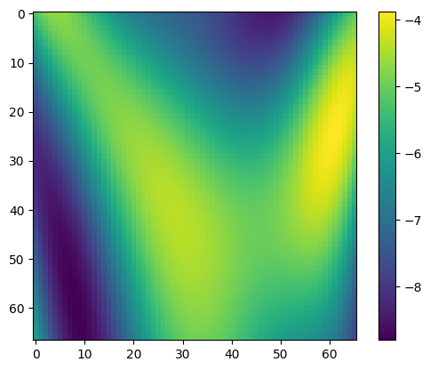
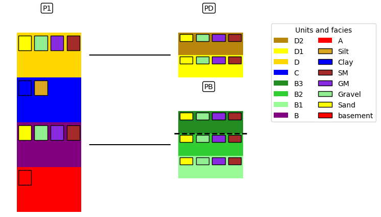
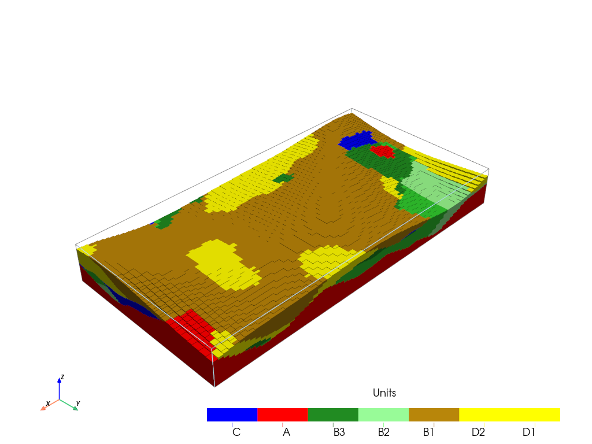
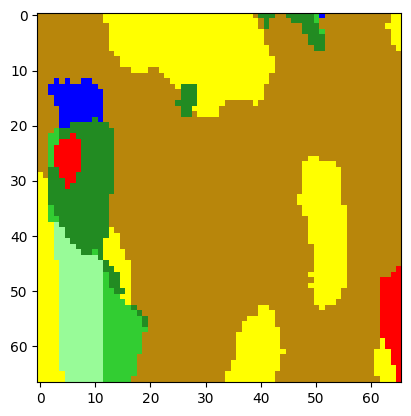
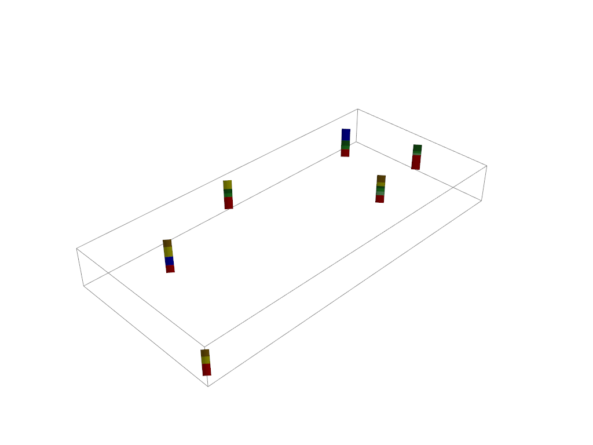

Geological map¶
This notebooks presents how to use a geological map with ArchPy models
[1]:
import numpy as np
import matplotlib
from matplotlib import colors
import matplotlib.pyplot as plt
import geone
import geone.covModel as gcm
import geone.imgplot3d as imgplt3
import pyvista as pv
import sys
sys.path.append("../../")
#my modules
from ArchPy.base import *
from ArchPy.tpgs import *
[2]:
PD = Pile(name = "PD", seed = 10)
PB = Pile(name = "PB",seed=1)
P1 = Pile(name = "P1",seed=1)
[3]:
#grid
sx = 1.5
sy = 0.75
sz = .15
x1 = 100
y1 = 50
z1 = -4
x0 = 0
y0 = 0
z0 = -15
nx = 66
ny = 67
nz = 75
def topo(x,y):
x /= 30
y /= 30
res = (np.sin(-(x-2)**2+1/7*(y-2)**2)) + \
(np.sin(-(x-1)**2+1/2*(y-1)**2))+ \
2*(np.sin(-(x-2)**2+1/2*(y-3)**2))
#res[res<0] = 0
return res
x =np.linspace(x0, x1, nx)
y = np.linspace(y0, y1, ny)
X,Y = np.meshgrid(x, y)
top = topo(X, Y)
top -= 6
dimensions = (nx, ny, nz)
spacing = (sx, sy, sz)
origin = (x0, y0, z0)
[4]:
plt.imshow(top)
plt.colorbar()
[4]:
<matplotlib.colorbar.Colorbar at 0x20df60830d0>

[5]:
#units covmodel
covmodelD = gcm.CovModel2D(elem=[('cubic', {'w':5.6, 'r':[30,30]})])
covmodelD1 = gcm.CovModel2D(elem=[('cubic', {'w':5.2, 'r':[30,30]})])
covmodelC = gcm.CovModel2D(elem=[('cubic', {'w':5.2, 'r':[40,40]})])
covmodelB = gcm.CovModel2D(elem=[('cubic', {'w':5.6, 'r':[30,30]})])
covmodel_er = gcm.CovModel2D(elem=[('spherical', {'w':5, 'r':[50,50]})])
## facies covmodel
covmodel_SIS_C = gcm.CovModel3D(elem=[("exponential",{"w":.25,"r":[50,50,15]})],alpha=0,name="vario_SIS") # input variogram
covmodel_SIS_D = gcm.CovModel3D(elem=[("exponential",{"w":.25,"r":[25,25,25]})],alpha=0,name="vario_SIS") # input variogram
lst_covmodelC=[covmodel_SIS_C] # list of covmodels to pass at the function
lst_covmodelD=[covmodel_SIS_D]
#create Lithologies
dic_s_D = {"int_method" : "grf_ineq","covmodel" : covmodelD}
dic_f_D = {"f_method":"SubPile", "SubPile": PD}
D = Unit(name="D",order=1,ID = 1,color="gold",contact="onlap",surface=Surface(contact="onlap",dic_surf=dic_s_D)
,dic_facies=dic_f_D)
dic_s_C = {"int_method" : "grf_ineq","covmodel" : covmodelC}
dic_f_C = {"f_method" : "SIS","neig" : 10,"f_covmodel":covmodel_SIS_C}
C = Unit(name="C",order=2,ID = 2,color="blue",contact="onlap",dic_facies=dic_f_C,surface=Surface(dic_surf=dic_s_C,contact="onlap"))
dic_s_B = {"int_method" : "grf_ineq","covmodel" : covmodelB}
dic_f_B = {"f_method":"SubPile","SubPile":PB}
B = Unit(name="B",order=3,ID = 3,color="purple",contact="onlap",dic_facies=dic_f_B,surface=Surface(contact="onlap",dic_surf=dic_s_B))
dic_s_A = {"int_method":"grf_ineq","covmodel": covmodelB}
dic_f_A = {"f_method":"homogenous"}
A = Unit(name="A",order=4, ID = 5,color="red",contact="onlap",dic_facies=dic_f_A,surface=Surface(dic_surf = dic_s_A,contact="onlap"))
#Master pile
P1.add_unit([D,C,B,A])
# PB
ds_B3 = {"int_method":"grf_ineq","covmodel":covmodelB}
df_B3 = {"f_method":"SIS", "neig" : 10,"f_covmodel":covmodel_SIS_D}
B3 = Unit(name = "B3",order=1,ID = 6,color="forestgreen",surface=Surface(dic_surf=ds_B3,contact="onlap"),dic_facies=df_B3)
ds_B2 = {"int_method":"grf_ineq","covmodel":covmodelB}
df_B2 = {"f_method":"SIS","neig" : 10,"f_covmodel":covmodel_SIS_D}
B2 = Unit(name = "B2",order=2,ID = 7,color="limegreen",surface=Surface(dic_surf=ds_B2,contact="erode"),dic_facies=df_B2)
ds_B1 = {"int_method":"grf_ineq","covmodel":covmodelB}
df_B1 = {"f_method":"SIS","neig" : 10,"f_covmodel":covmodel_SIS_D}
B1 = Unit(name = "B1",order=3, ID = 8,color="palegreen",surface=Surface(dic_surf=ds_B1,contact="onlap"),dic_facies=df_B1)
## Subpile
PB.add_unit([B3,B2,B1])
# PD
ds_D2 = {"int_method":"grf_ineq","covmodel":covmodelD1}
df_D2 = {"f_method":"SIS","neig" : 20,"f_covmodel":covmodel_SIS_D}
D2 = Unit(name = "D2", order=1, ID =9,color="darkgoldenrod",surface=Surface(dic_surf=ds_D2,contact="onlap"),dic_facies=df_D2)
ds_D1 = {"int_method":"grf_ineq","covmodel":covmodelD1}
df_D1 = {"f_method":"SIS","neig" : 20,"f_covmodel":covmodel_SIS_D}
D1 = Unit(name = "D1", order=2, ID = 10,color="yellow",surface=Surface(dic_surf=ds_D1,contact="onlap"),dic_facies=df_D1)
PD.add_unit([D2, D1])
Unit D: Surface added for interpolation
Unit C: covmodel for SIS added
Unit C: Surface added for interpolation
Unit B: Surface added for interpolation
Unit A: Surface added for interpolation
Stratigraphic unit D added ✅
Stratigraphic unit C added ✅
Stratigraphic unit B added ✅
Stratigraphic unit A added ✅
Unit B3: covmodel for SIS added
Unit B3: Surface added for interpolation
Unit B2: covmodel for SIS added
Unit B2: Surface added for interpolation
Unit B1: covmodel for SIS added
Unit B1: Surface added for interpolation
Stratigraphic unit B3 added ✅
Stratigraphic unit B2 added ✅
Stratigraphic unit B1 added ✅
Unit D2: covmodel for SIS added
Unit D2: Surface added for interpolation
Unit D1: covmodel for SIS added
Unit D1: Surface added for interpolation
Stratigraphic unit D2 added ✅
Stratigraphic unit D1 added ✅
[6]:
# covmodels for the property model
covmodelK = gcm.CovModel3D(elem=[("exponential",{"w":0.3,"r":[30,30,10]})],alpha=-20,name="K_vario")
covmodelK2 = gcm.CovModel3D(elem=[("spherical",{"w":0.1,"r":[20,20, 5]})],alpha=0,name="K_vario_2")
facies_1 = Facies(ID = 1,name="Sand",color="yellow")
facies_2 = Facies(ID = 2,name="Gravel",color="lightgreen")
facies_3 = Facies(ID = 3,name="GM",color="blueviolet")
facies_4 = Facies(ID = 4,name="Clay",color="blue")
facies_5 = Facies(ID = 5,name="SM",color="brown")
facies_6 = Facies(ID = 6,name="Silt",color="goldenrod")
facies_7 = Facies(ID = 7,name="basement",color="red")
A.add_facies([facies_7])
B.add_facies([facies_1,facies_2,facies_3,facies_5])
D.add_facies([facies_1,facies_2,facies_3,facies_5])
C.add_facies([facies_4,facies_6])
#add same facies than B
for b in PB.list_units:
b.add_facies(B.list_facies)
#same for D
for d in PD.list_units:
d.add_facies(D.list_facies)
permea = Prop("K",[facies_1,facies_2,facies_3,facies_4,facies_5,facies_6,facies_7],
[covmodelK2,covmodelK,covmodelK,None,covmodelK2,covmodelK,None],
means=[-3.5,-2,-4.5,-8,-5.5,-6.5,-10],
int_method = ["sgs","sgs","sgs","homogenous","sgs","sgs","homogenous"],
def_mean=-5)
Facies basement added to unit A ✅
Facies Sand added to unit B ✅
Facies Gravel added to unit B ✅
Facies GM added to unit B ✅
Facies SM added to unit B ✅
Facies Sand added to unit D ✅
Facies Gravel added to unit D ✅
Facies GM added to unit D ✅
Facies SM added to unit D ✅
Facies Clay added to unit C ✅
Facies Silt added to unit C ✅
Facies Sand added to unit B3 ✅
Facies Gravel added to unit B3 ✅
Facies GM added to unit B3 ✅
Facies SM added to unit B3 ✅
Facies Sand added to unit B2 ✅
Facies Gravel added to unit B2 ✅
Facies GM added to unit B2 ✅
Facies SM added to unit B2 ✅
Facies Sand added to unit B1 ✅
Facies Gravel added to unit B1 ✅
Facies GM added to unit B1 ✅
Facies SM added to unit B1 ✅
Facies Sand added to unit D2 ✅
Facies Gravel added to unit D2 ✅
Facies GM added to unit D2 ✅
Facies SM added to unit D2 ✅
Facies Sand added to unit D1 ✅
Facies Gravel added to unit D1 ✅
Facies GM added to unit D1 ✅
Facies SM added to unit D1 ✅
[7]:
#top = np.ones([ny,nx])*-6
bot = np.ones([ny,nx])*z0
[8]:
#logs strati
log_strati1 = [(C,-6.01),(B3,-8),(B2,-9),(B1,-9.5),(A,-10)]
log_strati2 = [(C,-5.01),(B3,-8.5),(B2,-9.5),(A,-10.5)]
log_strati3 = [(D2,-6.01), (D1, -7), (B3,-8),(B2,-8.5),(B1,-9.5),(A,-10.5)]
log_strati4 = [(D2,-6.01), (D1, -7), (B3,-9),(B2,-10),(A,-11)]
log_strati5 = [(D2,-6.01), (D1, -7), (C,-10),(A,-12)]
log_strati6 = [(D2,-6.01), (D1, -7), (A,-9)]
# logs facies
log_facies1 = [(facies_4,-6.01),(facies_6,-6.5),(facies_4,-7),(facies_6,-7.5), # facies in unit C
(facies_1,-8),(facies_5,-8.5),(facies_2,-9),(facies_3,-9.3), # facies in unit B
(facies_7,-10)]
log_facies2 = [(facies_4,-6.01),(facies_6,-7.3),(facies_4,-7.6),(facies_6,-8),
(facies_2,-8.5),(facies_1,-8.8),(facies_2,-9),(facies_3,-9.2),(facies_1,-10),
(facies_7,-10.5)]
log_facies3 = [(facies_1,-6.015),(facies_2,-6.8),(facies_5,-7),(facies_3,-7.3),(facies_1,-7.5),
(facies_2,-8),(facies_1,-8.8),(facies_2,-9),(facies_3,-9.2),(facies_1,-10),
(facies_7,-10.5)]
log_facies4 = [(facies_1,-6.01),(facies_2,-7.5),(facies_5,-7.8),(facies_3,-8),(facies_5,-8.3),(facies_1,-8.7),
(facies_2,-9),(facies_1,-10),(facies_2,-10.5),
(facies_7,-11)]
log_facies5 = [(facies_5,-6.01),(facies_1,-7.5),(facies_3,-7.8),(facies_2,-8),(facies_1,-8.3),(facies_2,-8.7),(facies_1,-9),(facies_5,-9.5),
(facies_4,-10),(facies_6,-10.4),(facies_4,-11),
(facies_7,-12)]
log_facies6 = [(facies_1,-6.01),(facies_2,-8.3),(facies_3,-8.5),(facies_2,-8.7),
(facies_7,-9)]
#create boreholes
bh1 = borehole("b1",1,x=5,y=25,z=log_strati1[0][1],depth =9,log_strati=log_strati1,log_facies=log_facies1)
bh2 = borehole("b2",2,x=15,y=10,z=log_strati2[0][1],depth =8,log_strati=log_strati2,log_facies=log_facies2)
bh3 = borehole("b3",3,x=25,y=30,z=log_strati3[0][1],depth =7,log_strati=log_strati3,log_facies=log_facies3)
bh4 = borehole("b4",4,x=50,y=5,z=log_strati4[0][1],depth =8,log_strati=log_strati4,log_facies=log_facies4)
bh5 = borehole("b5",5,x=75,y=15,z=log_strati5[0][1],depth =8,log_strati=log_strati5,log_facies=log_facies5)
bh6 = borehole("b6",6,x=90,y=45,z=log_strati6[0][1],depth =6,log_strati=log_strati6,log_facies=log_facies6)
[9]:
T1 = Arch_table(name = "P1",seed=150)
T1.set_Pile_master(P1)
T1.hierarchy_relations()
T1.add_grid(dimensions, spacing, origin, top=top,bot=bot)
T1.rem_all_bhs()
T1.add_bh([bh1,bh2,bh3,bh4,bh5,bh6])
T1.add_prop([permea])
Pile sets as Pile master
hierarchical relations set
## Adding Grid ##
## Grid added and is now simulation grid ##
Standard boreholes removed
Fake boreholes removed
Geological map boreholes removed
Borehole 1 goes below model limits, borehole 1 depth cut
Borehole 1 added
Borehole 2 added
Borehole 3 added
Borehole 4 goes below model limits, borehole 4 depth cut
Borehole 4 added
Borehole 5 added
Borehole 6 added
Property K added
[10]:
import warnings
warnings.filterwarnings("ignore")
[11]:
T1.plot_bhs(plot_top=True,
plot_bot=True,)
[12]:
T1.process_bhs()
##### ORDERING UNITS #####
Pile P1: ordering units
Stratigraphic units have been sorted according to order
Pile PD: ordering units
Stratigraphic units have been sorted according to order
Pile PB: ordering units
Stratigraphic units have been sorted according to order
hierarchical relations set
First altitude in log facies of bh 2 is not set at the top of the borehole, altitude changed
First altitude in log facies of bh 3 is not set at the top of the borehole, altitude changed
## Computing distributions for Normal Score Transform ##
Processing ended successfully
Plot pile to see the hierarchy and relations between objects. Note that it needs to be done after processing the boreholes.
[13]:
T1.plot_pile(plot_facies=True)

[14]:
T1.get_sp()[0]
[14]:
| name | contact | int_method | filling_method | list_facies | |
|---|---|---|---|---|---|
| 0 | D | onlap | grf_ineq | SubPile | [Sand, Gravel, GM, SM] |
| 1 | C | onlap | grf_ineq | SIS | [Clay, Silt] |
| 2 | B | onlap | grf_ineq | SubPile | [Sand, Gravel, GM, SM] |
| 3 | A | onlap | grf_ineq | homogenous | [basement] |
| 4 | D2 | onlap | grf_ineq | SIS | [Sand, Gravel, GM, SM] |
| 5 | D1 | onlap | grf_ineq | SIS | [Sand, Gravel, GM, SM] |
| 6 | B3 | onlap | grf_ineq | SIS | [Sand, Gravel, GM, SM] |
| 7 | B2 | erode | grf_ineq | SIS | [Sand, Gravel, GM, SM] |
| 8 | B1 | onlap | grf_ineq | SIS | [Sand, Gravel, GM, SM] |
[15]:
T1.compute_surf(1)
########## PILE P1 ##########
Pile P1: ordering units
Stratigraphic units have been sorted according to order
#### COMPUTING SURFACE OF UNIT A
A: time elapsed for computing surface 0.00984501838684082 s
#### COMPUTING SURFACE OF UNIT B
B: time elapsed for computing surface 0.010233402252197266 s
#### COMPUTING SURFACE OF UNIT C
C: time elapsed for computing surface 0.011365890502929688 s
#### COMPUTING SURFACE OF UNIT D
D: time elapsed for computing surface 0.0 s
Time elapsed for getting domains 0.0029997825622558594 s
##########################
########## PILE PD ##########
Pile PD: ordering units
Stratigraphic units have been sorted according to order
#### COMPUTING SURFACE OF UNIT D1
D1: time elapsed for computing surface 0.011049985885620117 s
#### COMPUTING SURFACE OF UNIT D2
D2: time elapsed for computing surface 0.0 s
Time elapsed for getting domains 0.002064228057861328 s
##########################
########## PILE PB ##########
Pile PB: ordering units
Stratigraphic units have been sorted according to order
#### COMPUTING SURFACE OF UNIT B1
B1: time elapsed for computing surface 0.013092756271362305 s
#### COMPUTING SURFACE OF UNIT B2
B2: time elapsed for computing surface 0.0067365169525146484 s
#### COMPUTING SURFACE OF UNIT B3
B3: time elapsed for computing surface 0.0 s
Time elapsed for getting domains 0.0030210018157958984 s
##########################
### 0.0894169807434082: Total time elapsed for computing surfaces ###
[16]:
pv.set_jupyter_backend('static')
[17]:
T1.plot_units(h_level=2)

[18]:
geol_map = T1.compute_geol_map(0, color=True)
plt.imshow(geol_map)
[18]:
<matplotlib.image.AxesImage at 0x20df98ef010>

[19]:
# save geological map as raster
import rasterio
g_map = T1.compute_geol_map(0)
with rasterio.open('geological_map.tif', 'w', driver='GTiff',
height=g_map.shape[0], width=g_map.shape[1],
count=1, dtype=g_map.dtype) as dst:
dst.write(g_map, 1)
[20]:
g_map.shape
[20]:
(67, 66)
[21]:
geol_map = T1.compute_geol_map(0)
[22]:
T1.add_geological_map(geol_map)
Geological map added
[23]:
p = pv.Plotter()
T1.plot_bhs(plotter=p)
# T1.plot_geol_map(plotter=p, up=0)
p.add_bounding_box()
p.show()

[24]:
T1.process_geological_map(typ="uniform", step_uniform=3)
Geological map extracted - processus ended successfully
[25]:
T1.reprocess()
Hard data reset
##### ORDERING UNITS #####
Pile P1: ordering units
Stratigraphic units have been sorted according to order
Pile PD: ordering units
Stratigraphic units have been sorted according to order
Pile PB: ordering units
Stratigraphic units have been sorted according to order
hierarchical relations set
Multiples boreholes [1, 'raster_bh'] were found inside the same cell, the deepest will be kept
Multiples boreholes [4, 'raster_bh'] were found inside the same cell, the deepest will be kept
## Computing distributions for Normal Score Transform ##
Processing ended successfully
[26]:
T1.order_Piles()
##### ORDERING UNITS #####
Pile P1: ordering units
Stratigraphic units have been sorted according to order
Pile PD: ordering units
Stratigraphic units have been sorted according to order
Pile PB: ordering units
Stratigraphic units have been sorted according to order
[27]:
T1.hierarchy_relations()
hierarchical relations set
[28]:
import warnings
warnings.filterwarnings("ignore")
[29]:
# modify kriging type for the simulation to ordinary to better account for trends
# and also increase number of iterations of the gibbs samplers
C.surface.dic_surf["krig_type"] = "ordinary_kriging"
C.surface.dic_surf["nit"] = 50
B.surface.dic_surf["nit"] = 50
A.surface.dic_surf["nit"] = 50
[30]:
T1.compute_surf(5)
########## PILE P1 ##########
Pile P1: ordering units
Stratigraphic units have been sorted according to order
#### COMPUTING SURFACE OF UNIT A
A: time elapsed for computing surface 0.14131617546081543 s
#### COMPUTING SURFACE OF UNIT B
B: time elapsed for computing surface 0.13399982452392578 s
#### COMPUTING SURFACE OF UNIT C
C: time elapsed for computing surface 0.13593316078186035 s
#### COMPUTING SURFACE OF UNIT D
D: time elapsed for computing surface 0.0 s
Time elapsed for getting domains 0.0030028820037841797 s
#### COMPUTING SURFACE OF UNIT A
A: time elapsed for computing surface 0.13859891891479492 s
#### COMPUTING SURFACE OF UNIT B
B: time elapsed for computing surface 0.1351299285888672 s
#### COMPUTING SURFACE OF UNIT C
C: time elapsed for computing surface 0.13752245903015137 s
#### COMPUTING SURFACE OF UNIT D
D: time elapsed for computing surface 0.0 s
Time elapsed for getting domains 0.003038167953491211 s
#### COMPUTING SURFACE OF UNIT A
A: time elapsed for computing surface 0.15128207206726074 s
#### COMPUTING SURFACE OF UNIT B
B: time elapsed for computing surface 0.13829302787780762 s
#### COMPUTING SURFACE OF UNIT C
C: time elapsed for computing surface 0.14284372329711914 s
#### COMPUTING SURFACE OF UNIT D
D: time elapsed for computing surface 0.0 s
Time elapsed for getting domains 0.0030336380004882812 s
#### COMPUTING SURFACE OF UNIT A
A: time elapsed for computing surface 0.14635109901428223 s
#### COMPUTING SURFACE OF UNIT B
B: time elapsed for computing surface 0.14177775382995605 s
#### COMPUTING SURFACE OF UNIT C
C: time elapsed for computing surface 0.13992094993591309 s
#### COMPUTING SURFACE OF UNIT D
D: time elapsed for computing surface 0.0 s
Time elapsed for getting domains 0.0029976367950439453 s
#### COMPUTING SURFACE OF UNIT A
A: time elapsed for computing surface 0.20995664596557617 s
#### COMPUTING SURFACE OF UNIT B
B: time elapsed for computing surface 0.1990971565246582 s
#### COMPUTING SURFACE OF UNIT C
C: time elapsed for computing surface 0.15072369575500488 s
#### COMPUTING SURFACE OF UNIT D
D: time elapsed for computing surface 0.0 s
Time elapsed for getting domains 0.003167390823364258 s
##########################
########## PILE PD ##########
Pile PD: ordering units
Stratigraphic units have been sorted according to order
#### COMPUTING SURFACE OF UNIT D1
D1: time elapsed for computing surface 0.13994550704956055 s
#### COMPUTING SURFACE OF UNIT D2
D2: time elapsed for computing surface 0.0 s
Time elapsed for getting domains 0.002062082290649414 s
#### COMPUTING SURFACE OF UNIT D1
D1: time elapsed for computing surface 0.13340234756469727 s
#### COMPUTING SURFACE OF UNIT D2
D2: time elapsed for computing surface 0.0 s
Time elapsed for getting domains 0.002000093460083008 s
#### COMPUTING SURFACE OF UNIT D1
D1: time elapsed for computing surface 0.13629603385925293 s
#### COMPUTING SURFACE OF UNIT D2
D2: time elapsed for computing surface 0.0 s
Time elapsed for getting domains 0.0010004043579101562 s
#### COMPUTING SURFACE OF UNIT D1
D1: time elapsed for computing surface 0.13399910926818848 s
#### COMPUTING SURFACE OF UNIT D2
D2: time elapsed for computing surface 0.0 s
Time elapsed for getting domains 0.0009999275207519531 s
#### COMPUTING SURFACE OF UNIT D1
D1: time elapsed for computing surface 0.13740253448486328 s
#### COMPUTING SURFACE OF UNIT D2
D2: time elapsed for computing surface 0.0 s
Time elapsed for getting domains 0.0009984970092773438 s
##########################
########## PILE PB ##########
Pile PB: ordering units
Stratigraphic units have been sorted according to order
#### COMPUTING SURFACE OF UNIT B1
B1: time elapsed for computing surface 0.02779865264892578 s
#### COMPUTING SURFACE OF UNIT B2
B2: time elapsed for computing surface 0.02736210823059082 s
#### COMPUTING SURFACE OF UNIT B3
B3: time elapsed for computing surface 0.0 s
Time elapsed for getting domains 0.002004861831665039 s
#### COMPUTING SURFACE OF UNIT B1
B1: time elapsed for computing surface 0.0317835807800293 s
#### COMPUTING SURFACE OF UNIT B2
B2: time elapsed for computing surface 0.029268264770507812 s
#### COMPUTING SURFACE OF UNIT B3
B3: time elapsed for computing surface 0.0 s
Time elapsed for getting domains 0.003052949905395508 s
#### COMPUTING SURFACE OF UNIT B1
B1: time elapsed for computing surface 0.02730250358581543 s
#### COMPUTING SURFACE OF UNIT B2
B2: time elapsed for computing surface 0.023798465728759766 s
#### COMPUTING SURFACE OF UNIT B3
B3: time elapsed for computing surface 0.0 s
Time elapsed for getting domains 0.002999544143676758 s
#### COMPUTING SURFACE OF UNIT B1
B1: time elapsed for computing surface 0.025969743728637695 s
#### COMPUTING SURFACE OF UNIT B2
B2: time elapsed for computing surface 0.024364709854125977 s
#### COMPUTING SURFACE OF UNIT B3
B3: time elapsed for computing surface 0.0 s
Time elapsed for getting domains 0.0030541419982910156 s
#### COMPUTING SURFACE OF UNIT B1
B1: time elapsed for computing surface 0.029395580291748047 s
#### COMPUTING SURFACE OF UNIT B2
B2: time elapsed for computing surface 0.02576732635498047 s
#### COMPUTING SURFACE OF UNIT B3
B3: time elapsed for computing surface 0.0 s
Time elapsed for getting domains 0.002000093460083008 s
##########################
### 3.273360252380371: Total time elapsed for computing surfaces ###
[31]:
pv.set_jupyter_backend("server")
[32]:
p = pv.Plotter()
T1.plot_units(0, plotter=p)
# T1.plot_geol_map(plotter=p, up=15)
p.add_bounding_box()
T1.plot_bhs(plotter=p)
p.show()
[ ]:
[33]:
p=pv.Plotter()
T1.plot_bhs(plotter=p)
T1.plot_units(iu=0, plotter=p, slicex=(0.15, 0.85), slicey=(0.2, 0.8))
p.show()
[34]:
T1.plot_proba(D, v_ex=1, filtering_interval=[0.1, 1])
[35]:
T1.compute_facies(1, verbose_methods=2)
### Unit D: facies simulation with SubPile method ####
SubPile filling method, nothing happened
Time elapsed 0.0 s
### Unit C: facies simulation with SIS method ####
### Unit C - realization 0 ###
Some errors have been found
Some facies were found inside units where they shouldn't be
### List of errors ####
Facies Gravel: 2 points
Only one facies covmodels for multiples facies, adapt sill to right proportions
simulateIndicator3D: Geos-Classic running... [VERSION 2.0 / BUILD NUMBER 20240322 / OpenMP 7 thread(s)]
simulateIndicator3D: Geos-Classic run complete
### Unit C - realization 1 ###
Some errors have been found
Some facies were found inside units where they shouldn't be
### List of errors ####
Facies basement: 1 points
simulateIndicator3D: Geos-Classic running... [VERSION 2.0 / BUILD NUMBER 20240322 / OpenMP 7 thread(s)]
simulateIndicator3D: Geos-Classic run complete
### Unit C - realization 2 ###
Some errors have been found
Some facies were found inside units where they shouldn't be
### List of errors ####
Facies basement: 1 points
simulateIndicator3D: Geos-Classic running... [VERSION 2.0 / BUILD NUMBER 20240322 / OpenMP 7 thread(s)]
simulateIndicator3D: Geos-Classic run complete
### Unit C - realization 3 ###
simulateIndicator3D: Geos-Classic running... [VERSION 2.0 / BUILD NUMBER 20240322 / OpenMP 7 thread(s)]
simulateIndicator3D: Geos-Classic run complete
### Unit C - realization 4 ###
Some errors have been found
Some facies were found inside units where they shouldn't be
### List of errors ####
Facies SM: 2 points
Facies basement: 6 points
simulateIndicator3D: Geos-Classic running... [VERSION 2.0 / BUILD NUMBER 20240322 / OpenMP 7 thread(s)]
simulateIndicator3D: Geos-Classic run complete
Time elapsed 2.87 s
### Unit B: facies simulation with SubPile method ####
SubPile filling method, nothing happened
Time elapsed 0.0 s
### Unit A: facies simulation with homogenous method ####
### Unit A - realization 0 ###
### Unit A - realization 1 ###
### Unit A - realization 2 ###
### Unit A - realization 3 ###
### Unit A - realization 4 ###
Time elapsed 0.0 s
### Unit D2: facies simulation with SIS method ####
### Unit D2 - realization 0 ###
Some errors have been found
Some facies were found inside units where they shouldn't be
### List of errors ####
Facies Clay: 4 points
Only one facies covmodels for multiples facies, adapt sill to right proportions
simulateIndicator3D: Geos-Classic running... [VERSION 2.0 / BUILD NUMBER 20240322 / OpenMP 7 thread(s)]
simulateIndicator3D: Geos-Classic run complete
### Unit D2 - realization 1 ###
Some errors have been found
Some facies were found inside units where they shouldn't be
### List of errors ####
Facies Clay: 5 points
simulateIndicator3D: Geos-Classic running... [VERSION 2.0 / BUILD NUMBER 20240322 / OpenMP 7 thread(s)]
simulateIndicator3D: Geos-Classic run complete
### Unit D2 - realization 2 ###
Some errors have been found
Some facies were found inside units where they shouldn't be
### List of errors ####
Facies Clay: 8 points
simulateIndicator3D: Geos-Classic running... [VERSION 2.0 / BUILD NUMBER 20240322 / OpenMP 7 thread(s)]
simulateIndicator3D: Geos-Classic run complete
### Unit D2 - realization 3 ###
Some errors have been found
Some facies were found inside units where they shouldn't be
### List of errors ####
Facies Clay: 1 points
simulateIndicator3D: Geos-Classic running... [VERSION 2.0 / BUILD NUMBER 20240322 / OpenMP 7 thread(s)]
simulateIndicator3D: Geos-Classic run complete
### Unit D2 - realization 4 ###
Some errors have been found
Some facies were found inside units where they shouldn't be
### List of errors ####
Facies Clay: 2 points
simulateIndicator3D: Geos-Classic running... [VERSION 2.0 / BUILD NUMBER 20240322 / OpenMP 7 thread(s)]
simulateIndicator3D: Geos-Classic run complete
Time elapsed 3.3 s
### Unit D1: facies simulation with SIS method ####
### Unit D1 - realization 0 ###
Some errors have been found
Some facies were found inside units where they shouldn't be
### List of errors ####
Facies Clay: 3 points
Facies Silt: 4 points
Only one facies covmodels for multiples facies, adapt sill to right proportions
simulateIndicator3D: Geos-Classic running... [VERSION 2.0 / BUILD NUMBER 20240322 / OpenMP 7 thread(s)]
simulateIndicator3D: Geos-Classic run complete
### Unit D1 - realization 1 ###
Some errors have been found
Some facies were found inside units where they shouldn't be
### List of errors ####
Facies Clay: 2 points
Facies Silt: 2 points
simulateIndicator3D: Geos-Classic running... [VERSION 2.0 / BUILD NUMBER 20240322 / OpenMP 7 thread(s)]
simulateIndicator3D: Geos-Classic run complete
### Unit D1 - realization 2 ###
Some errors have been found
Some facies were found inside units where they shouldn't be
### List of errors ####
Facies Clay: 2 points
Facies Silt: 3 points
simulateIndicator3D: Geos-Classic running... [VERSION 2.0 / BUILD NUMBER 20240322 / OpenMP 7 thread(s)]
simulateIndicator3D: Geos-Classic run complete
### Unit D1 - realization 3 ###
simulateIndicator3D: Geos-Classic running... [VERSION 2.0 / BUILD NUMBER 20240322 / OpenMP 7 thread(s)]
simulateIndicator3D: Geos-Classic run complete
### Unit D1 - realization 4 ###
simulateIndicator3D: Geos-Classic running... [VERSION 2.0 / BUILD NUMBER 20240322 / OpenMP 7 thread(s)]
simulateIndicator3D: Geos-Classic run complete
Time elapsed 3.33 s
### Unit B3: facies simulation with SIS method ####
### Unit B3 - realization 0 ###
Only one facies covmodels for multiples facies, adapt sill to right proportions
simulateIndicator3D: Geos-Classic running... [VERSION 2.0 / BUILD NUMBER 20240322 / OpenMP 7 thread(s)]
simulateIndicator3D: Geos-Classic run complete
### Unit B3 - realization 1 ###
simulateIndicator3D: Geos-Classic running... [VERSION 2.0 / BUILD NUMBER 20240322 / OpenMP 7 thread(s)]
simulateIndicator3D: Geos-Classic run complete
### Unit B3 - realization 2 ###
Some errors have been found
Some facies were found inside units where they shouldn't be
### List of errors ####
Facies Silt: 2 points
simulateIndicator3D: Geos-Classic running... [VERSION 2.0 / BUILD NUMBER 20240322 / OpenMP 7 thread(s)]
simulateIndicator3D: Geos-Classic run complete
### Unit B3 - realization 3 ###
Some errors have been found
Some facies were found inside units where they shouldn't be
### List of errors ####
Facies Clay: 4 points
Facies basement: 2 points
simulateIndicator3D: Geos-Classic running... [VERSION 2.0 / BUILD NUMBER 20240322 / OpenMP 7 thread(s)]
simulateIndicator3D: Geos-Classic run complete
### Unit B3 - realization 4 ###
Some errors have been found
Some facies were found inside units where they shouldn't be
### List of errors ####
Facies Silt: 3 points
simulateIndicator3D: Geos-Classic running... [VERSION 2.0 / BUILD NUMBER 20240322 / OpenMP 7 thread(s)]
simulateIndicator3D: Geos-Classic run complete
Time elapsed 1.99 s
### Unit B2: facies simulation with SIS method ####
### Unit B2 - realization 0 ###
Some errors have been found
Some facies were found inside units where they shouldn't be
### List of errors ####
Facies basement: 3 points
Only one facies covmodels for multiples facies, adapt sill to right proportions
simulateIndicator3D: Geos-Classic running... [VERSION 2.0 / BUILD NUMBER 20240322 / OpenMP 7 thread(s)]
simulateIndicator3D: Geos-Classic run complete
### Unit B2 - realization 1 ###
Some errors have been found
Some facies were found inside units where they shouldn't be
### List of errors ####
Facies basement: 1 points
simulateIndicator3D: Geos-Classic running... [VERSION 2.0 / BUILD NUMBER 20240322 / OpenMP 7 thread(s)]
simulateIndicator3D: Geos-Classic run complete
### Unit B2 - realization 2 ###
Some errors have been found
Some facies were found inside units where they shouldn't be
### List of errors ####
Facies basement: 6 points
simulateIndicator3D: Geos-Classic running... [VERSION 2.0 / BUILD NUMBER 20240322 / OpenMP 7 thread(s)]
simulateIndicator3D: Geos-Classic run complete
### Unit B2 - realization 3 ###
simulateIndicator3D: Geos-Classic running... [VERSION 2.0 / BUILD NUMBER 20240322 / OpenMP 7 thread(s)]
simulateIndicator3D: Geos-Classic run complete
### Unit B2 - realization 4 ###
Some errors have been found
Some facies were found inside units where they shouldn't be
### List of errors ####
Facies basement: 2 points
simulateIndicator3D: Geos-Classic running... [VERSION 2.0 / BUILD NUMBER 20240322 / OpenMP 7 thread(s)]
simulateIndicator3D: Geos-Classic run complete
Time elapsed 1.75 s
### Unit B1: facies simulation with SIS method ####
### Unit B1 - realization 0 ###
Some errors have been found
Some facies were found inside units where they shouldn't be
### List of errors ####
Facies basement: 1 points
Only one facies covmodels for multiples facies, adapt sill to right proportions
simulateIndicator3D: Geos-Classic running... [VERSION 2.0 / BUILD NUMBER 20240322 / OpenMP 7 thread(s)]
simulateIndicator3D: Geos-Classic run complete
### Unit B1 - realization 1 ###
Some errors have been found
Some facies were found inside units where they shouldn't be
### List of errors ####
Facies basement: 8 points
simulateIndicator3D: Geos-Classic running... [VERSION 2.0 / BUILD NUMBER 20240322 / OpenMP 7 thread(s)]
simulateIndicator3D: Geos-Classic run complete
### Unit B1 - realization 2 ###
Some errors have been found
Some facies were found inside units where they shouldn't be
### List of errors ####
Facies basement: 2 points
simulateIndicator3D: Geos-Classic running... [VERSION 2.0 / BUILD NUMBER 20240322 / OpenMP 7 thread(s)]
simulateIndicator3D: Geos-Classic run complete
### Unit B1 - realization 3 ###
Some errors have been found
Some facies were found inside units where they shouldn't be
### List of errors ####
Facies basement: 2 points
simulateIndicator3D: Geos-Classic running... [VERSION 2.0 / BUILD NUMBER 20240322 / OpenMP 7 thread(s)]
simulateIndicator3D: Geos-Classic run complete
### Unit B1 - realization 4 ###
Some errors have been found
Some facies were found inside units where they shouldn't be
### List of errors ####
Facies basement: 6 points
simulateIndicator3D: Geos-Classic running... [VERSION 2.0 / BUILD NUMBER 20240322 / OpenMP 7 thread(s)]
simulateIndicator3D: Geos-Classic run complete
Time elapsed 1.92 s
### 15.16: Total time elapsed for computing facies ###
[36]:
T1.plot_facies()
[37]:
T1.plot_facies(2,0,inside_units=[C])
[38]:
#prop hd
ix = np.arange(0, nx*sx+0, sx)
n = len(ix)
x_hd = np.array((ix, np.ones(n)*5, np.ones(n)*-10)).T
v = np.ones(n)*-1
[39]:
permea.x = None
permea.v = None
[40]:
permea.add_hd(x_hd, v)
[41]:
T1.compute_prop(2)
### 10 K property models will be modeled ###
homogenous method chosen ! Warning: Some HD can be not respected
homogenous method chosen ! Warning: Some HD can be not respected
### 2 K models done
homogenous method chosen ! Warning: Some HD can be not respected
homogenous method chosen ! Warning: Some HD can be not respected
### 4 K models done
homogenous method chosen ! Warning: Some HD can be not respected
homogenous method chosen ! Warning: Some HD can be not respected
### 6 K models done
homogenous method chosen ! Warning: Some HD can be not respected
homogenous method chosen ! Warning: Some HD can be not respected
### 8 K models done
homogenous method chosen ! Warning: Some HD can be not respected
homogenous method chosen ! Warning: Some HD can be not respected
### 10 K models done
[42]:
T1.plot_units(slicex=0.5,slicey=0.5,slicez=0.5)
[43]:
T1.plot_prop("K",0, slicex=0.5,slicey=0.5,slicez=0.5)
[44]:
T1.plot_mean_prop("K")